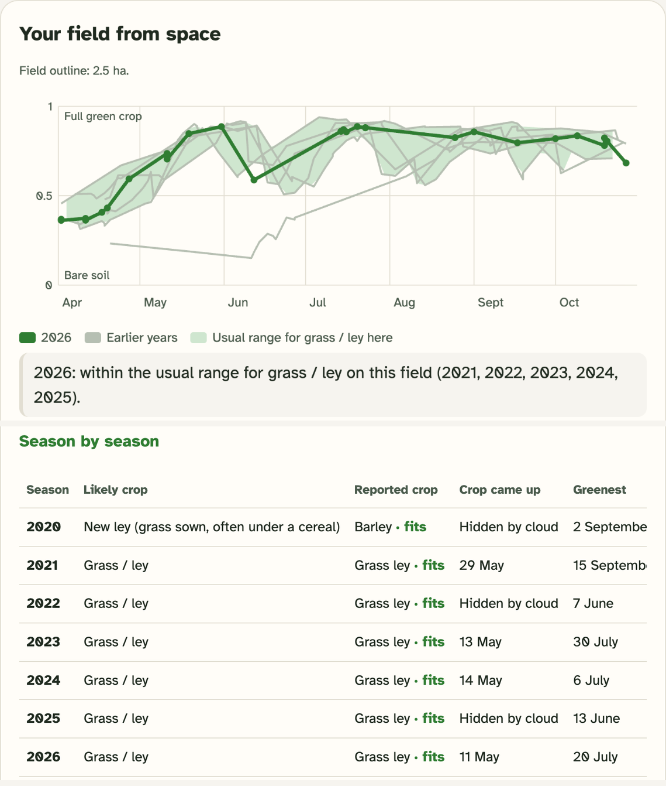

Find your farm, choose a field, and see the evidence: 45 years of NASA weather and every satellite image of that field.
THE CHALLENGE
One field, a shifting climate, and decisions that reach years ahead
01
This year’s crop shapes the soil, pests and yields of the years that follow.
02
Frosts, dry spells and heat no longer arrive when the farm was planned for them.
03
NASA has the records, but they are scattered and hard to turn into a decision for one field.
ROTATION LAB
HOW IT WORKS
Built on open NASA data
NASA POWER · DAILY · 1981–TODAY
Weather and soil wetness
45 years of daily records for the field’s location.
NASA HLS · 30 M · SINCE 2020
The field’s satellite record
Every Landsat and Sentinel-2 image of the outlined field, clouds removed.
NASA POWER · CLIMATOLOGY
Long-term normals
Is this month unusual for this place?
NASA GIBS
Map layers
Greenness, soil moisture, rain and land temperature for context.
Plus Norway’s open records (the crops each farm reported, the property map), ESA WorldCover, SoilGrids and FAO-56 crop science, and what only the grower knows: drainage, irrigation, plans.
ROTATION LAB

THE FIELD FROM SPACE · STJØRDAL
What the satellite saw, and what the farm reported
01
The farm reported winter wheat, then barley in 2020, then grass from 2021.
02
From space, 2020 was bare in May and green into October: barley with grass sown under it.
03
The crop seen from space fits the farm’s own record in 7 of 7 seasons.
A crop is compared only with earlier years of the same crop.
ROTATION LAB
THEN AND NOW · 1990s VS THE LAST TEN SEASONS
What has changed around these fields
+18 days
Frost-free season, Stjørdal, since the 1990s (133 → 151)
12 days
earlier last spring frost (25 May → 13 May)
9 → 13
potato blight-weather days a season
36%
barley’s share of Stjørdal’s farmland in 2026, down from 44% in 2017 (wheat 3% → 6%)
Stated only when the whole record trends the same way (weather since 1981, crops since 2017). No good-or-bad labels: that depends on the grower’s crops.
ROTATION LAB
HONEST BY DESIGN
Evidence and options, not orders
CHECKED
Against the farms’ own reports
Crops seen from space vs crops farms reported: 7 of 7 seasons on the example field; grass around it 20–29% vs 22–24%.
SAYS WHEN IT CAN’T TELL
No confident guesses
“Not judged”, “too few seasons”, “crops changed”, always with the reason.
GROWERS DECIDE
Their plan, their call
Likely crops are hints; the grower’s own rotation is what gets checked.
TRACEABLE
Every finding shows its evidence
Each result links to the charts and NASA records behind it.